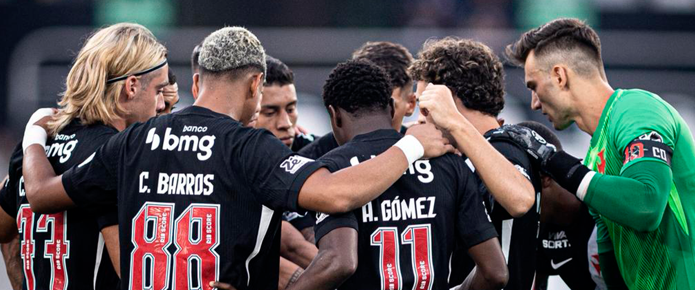
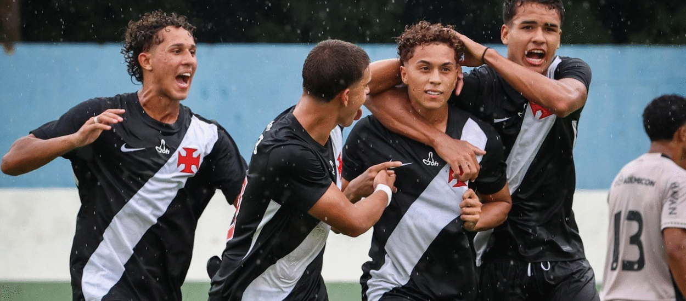
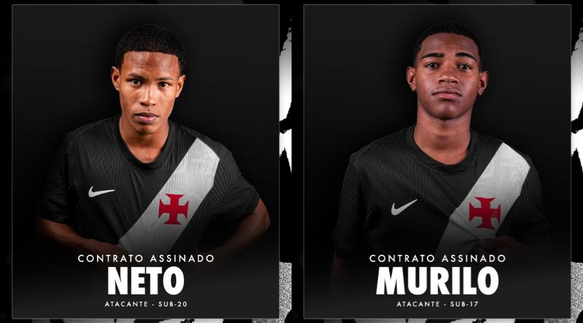
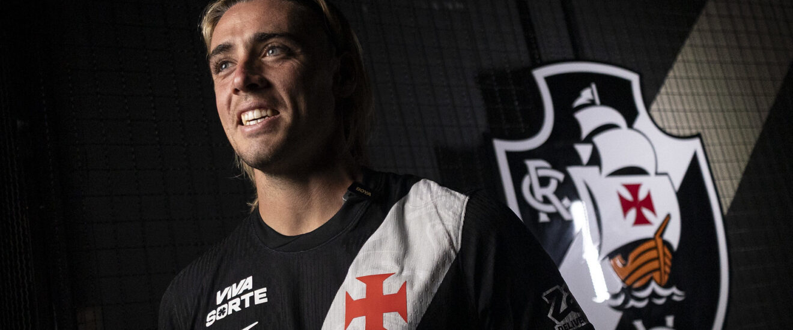

Vasco x flamengo
Vasco goleia o Flamengo por 4 a 1 e mantém 100% no Brasileiro Sub-20

superado
Vasco é superado pelo Fluminense no primeiro jogo da semifinal do Carioca

#BaseForte
"#BaseForte estreia com vitória sobre o Athletico Paranaense no Brasileiro Sub-20"

contratato
Vasco assina com Neto e Murilo, reforços da Base Forte

contratação do atacante spinelli
Vasco acerta a contratação do atacante Spinelli

Feminino sofre revés
"Feminino sofre revés contra o Flamengo na Copa Rio"

Vasco supera Botafogo
Vasco supera Botafogo em São Januário e conquista os três pontos na última rodada do Carioca

Vasco acerta a contratação
Vasco acerta a contratação do lateral-esquerdo Cuiabano

Allan Vitor (36) - Goleiro
Puma Rodríguez (2) - Lateral-Direito
Saldivia (04) - Zagueiro
Cuiabano (66) - Lateral esquerdo
Cauan Barros (88) - Volante
Rojas (29) - Meio-Campista
spinelli (77) - Atacante